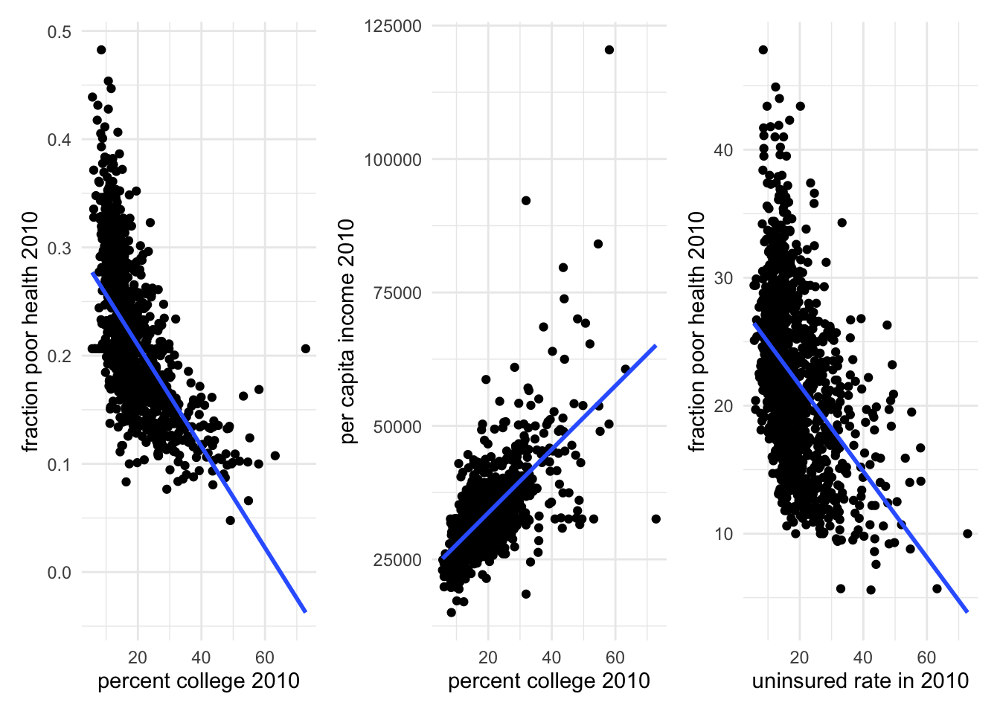

3 Challenges
When exploring cause-and-effect relationships, a fundamental challenge arises: we often cannot conduct controlled lab experiments for most real-world questions. Let’s consider an example to illustrate this.
Imagine you, as a researcher, want to study the relationship between having a college degree and health outcomes. Ideally, you’d want to observe an individual, say person A, in two states: i) with college level education; and ii) without college level education. Next, you’d want to measure her health outcomes in these two states and make comparison.
However, this is not possible with the main reason being that you cannot observe two individuals in different states at a given point in time. Mostly, you’ll have to tackle your research questions with observational data.
Let’s look at the observational data. Specifically, your dependent variable is the prevalence of poor health, and your independent variable is the percentage of the population with a college degree. You obtain county-level data for the year 2010, which includes the fraction of people in poor health and the percentage of the population with a college degree.
# load in county level uninsured rate data merged with other variables
mort_allcauses <- read_feather( file.path(datapath, "NVSS_data_county_2010to2017_merged_allcauses.feather")) %>%
filter(year == 2010 & age == 0 & race_name == "black") %>%
dplyr::select("countyfips", "year", "state.abb", "expand", "yearexpand", "sahieunins_allinc", "GovernorisDemocrat1Yes", "mortality_rate1000", "percap_income_2010",
"rural_urban_code2013a", "p_college2010",
"prop_black_2010", "prop_white_2010", "infant.mort",
"poor.health", "low.birthweight") %>%
filter(duplicated(.)) %>%
arrange(countyfips, year)
f0 <- ggplot(subset(mort_allcauses), aes(y = poor.health, x = p_college2010)) + geom_point() +
geom_smooth(method = "lm", se = FALSE) +
xlab("percent college 2010") + ylab("fraction poor health 2010")
f1 <- ggplot(subset(mort_allcauses), aes(y = percap_income_2010, x = p_college2010)) + geom_point() +
geom_smooth(method = "lm", se = FALSE) +
xlab("percent college 2010") + ylab("per capita income 2010")
f3 <- ggplot(subset(mort_allcauses), aes(y = sahieunins_allinc, x = p_college2010)) + geom_point() +
geom_smooth(method = "lm", se = FALSE) +
xlab("uninsured rate in 2010") + ylab("fraction poor health 2010")
f1## `geom_smooth()` using formula = 'y ~ x'
At first glance, the data reveals a relationship between these variables. But how do we interpret this relationship? Does having a college degree cause better health, or is something else at play?
Let’s take a look at more wholesome illustrations.
f0 + f1 + f3## `geom_smooth()` using formula = 'y ~ x'
## `geom_smooth()` using formula = 'y ~ x'
## `geom_smooth()` using formula = 'y ~ x'
We see that percent college is negatively correlated with poor health. However, places with higher proportion of college graduates also have higher per capita income and lower uninsured rates. Both income and insurance status may have a causal effect on one’s health. Hence, it is unwise to make a rushed claim that college education leads to better health status. It may, or it may not. We dont know yet!